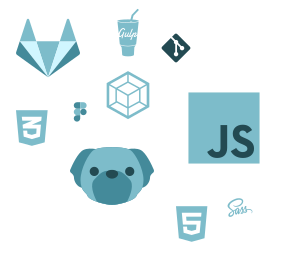

Фронтенд,
лето, юность
Оставить заявку

Мы — агентство Адикт. Сильны в сложной разработке, любим дизайн и брендинг, делаем хорошую интернет-рекламу.
Мы более 9 лет занимаемся комплексной разработкой и поддержкой интернет-проектов: от создания до продвижения и рекламы

{ Что предлагаем? }
В рамках стажировки вы изучите основы коммерческой разработки на HTML, CSS, JS, изучите работу с библиотеками и препроцессорами, узнаете, что такое хорошая верстка и отточите навыки на учебных и реальных проектах
Срок стажировки: 3 месяца
Полезность полученных знаний: бесценно